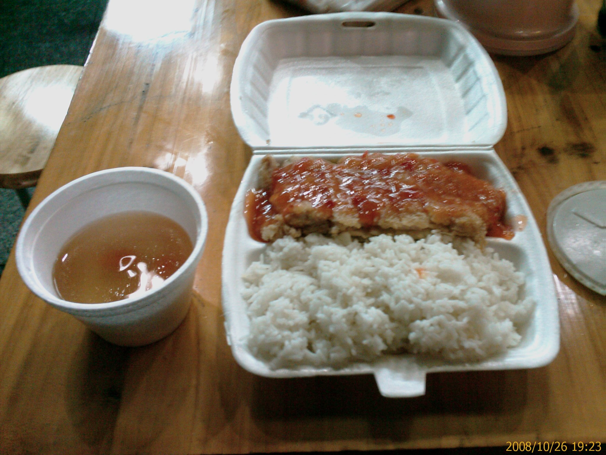
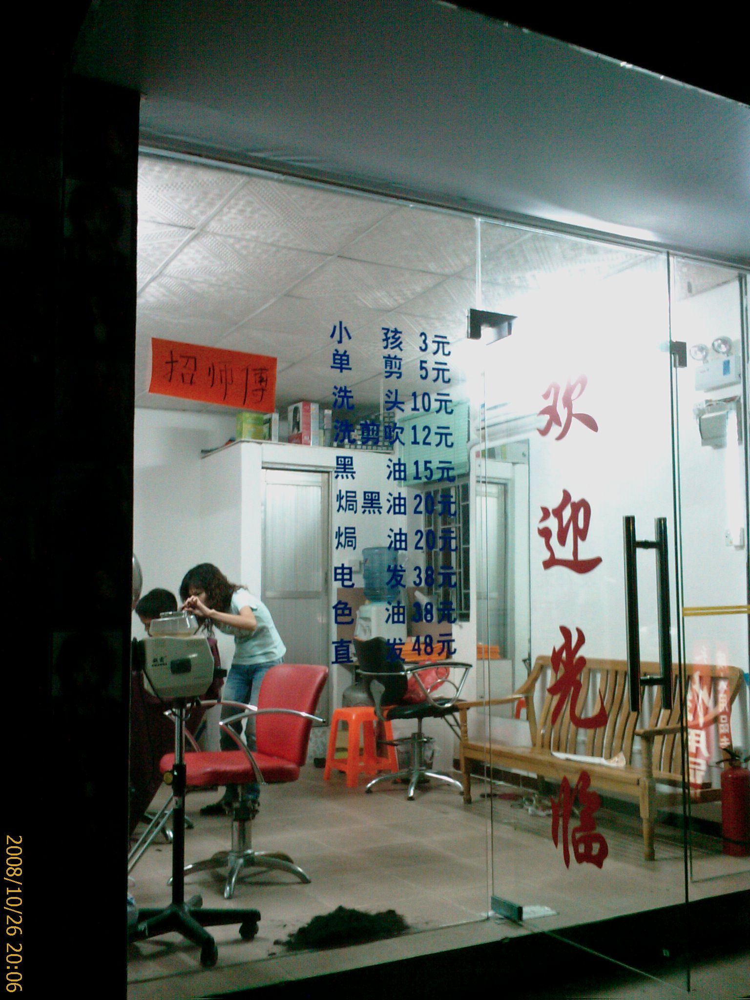
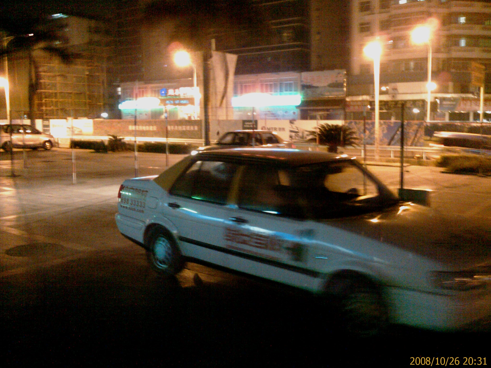
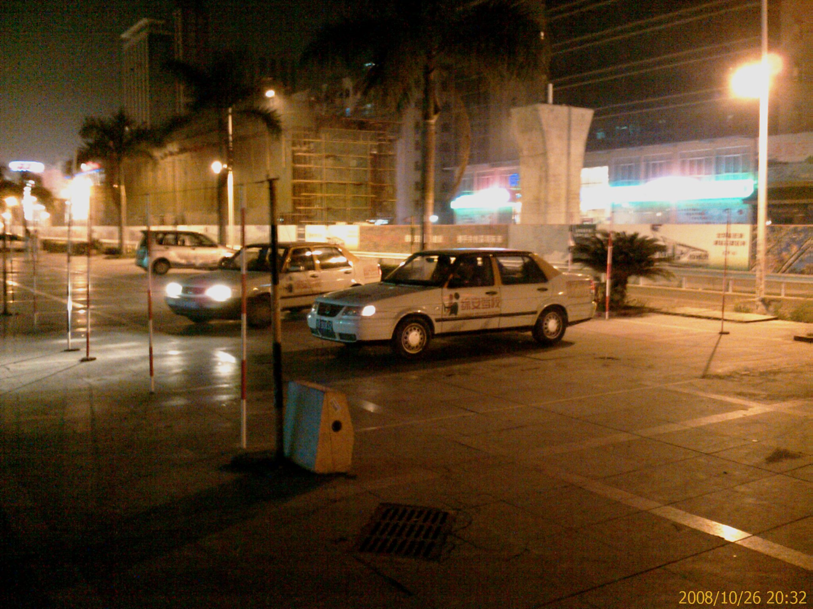

今天第三篇
26/Oct 2008
晚上本來要找同事一起吃飯的
結果他跑去關內了…Orz
所以只好又一個人出去覓食
晚餐吃的是園中園裡的一家路邊攤
我點的是泰式豬扒飯(這邊的扒應該是排的意思吧!?)
打開來第一眼看覺得很寒酸
連道青菜都沒有
這樣要 7 塊錢
不過把豬排翻開來看才發現菜被壓在下面了…=.=
豬排的味道不錯
應該要歸功於那個醬汁吧

吃完之後
因為房間的燈泡四個壞了三個
有點昏暗
(其實一開始住進來就這樣了…@_@)
有通知房東了
可是過了一個星期還是沒有動靜
想說去買一下燈泡自己換好了
結果逛了好久都沒有找到…T_T
路過理髮店
好像還蠻便宜的耶
可是回家給媽剪就不用花錢了…XD

接到新室友的電話
說他到了
所以就打道回府
去接新室友了…^_^
路旁的汽車教練場
還真簡陋啊…@_@

